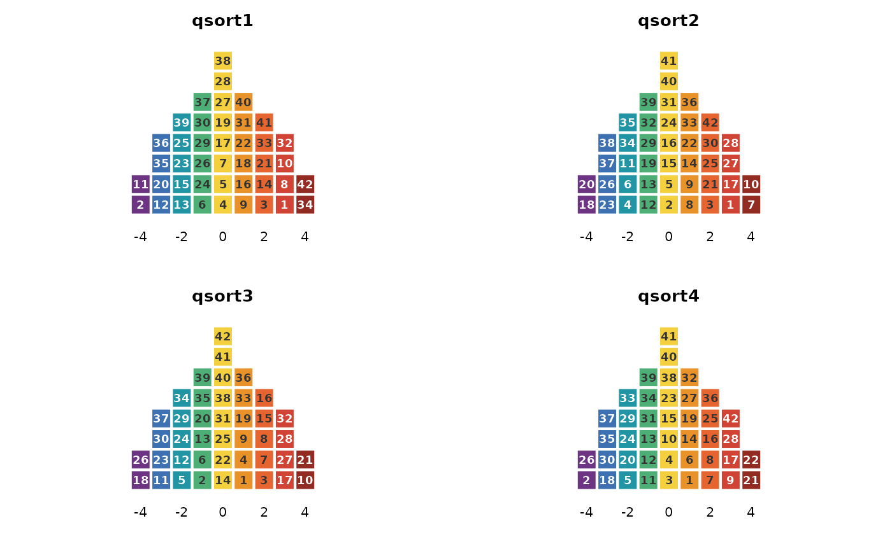

The childhood obesity Q dataset from Akhtar-Danesh (2023): 33 participants each force-sorted 42 statements about childhood obesity onto a nine-column grid (quotas 2-4-5-6-8-6-5-4-2, printed values -4 to +4). A real, published panel at typical Q scale, used in the package documentation.
Format
A qsort_data object: the 42 x 33 integer matrix of printed grid values with statement and participant ids, and the forced distribution.
Source
Akhtar-Danesh, N. (2023). Impact of factor rotation on Q-methodology analysis. PLOS ONE, 18(9), e0290728. doi:10.1371/journal.pone.0290728
Examples
obesity_sorts
#> Q-sort data
#> statements : 42 participants : 33
#> distribution: 2 4 5 6 8 6 5 4 2 (sum = 42 )
#> value range : [-4, 4]
#> source : excel:Childhood obesity dataset.xlsx
plot(obesity_sorts, participants = 1:4)
